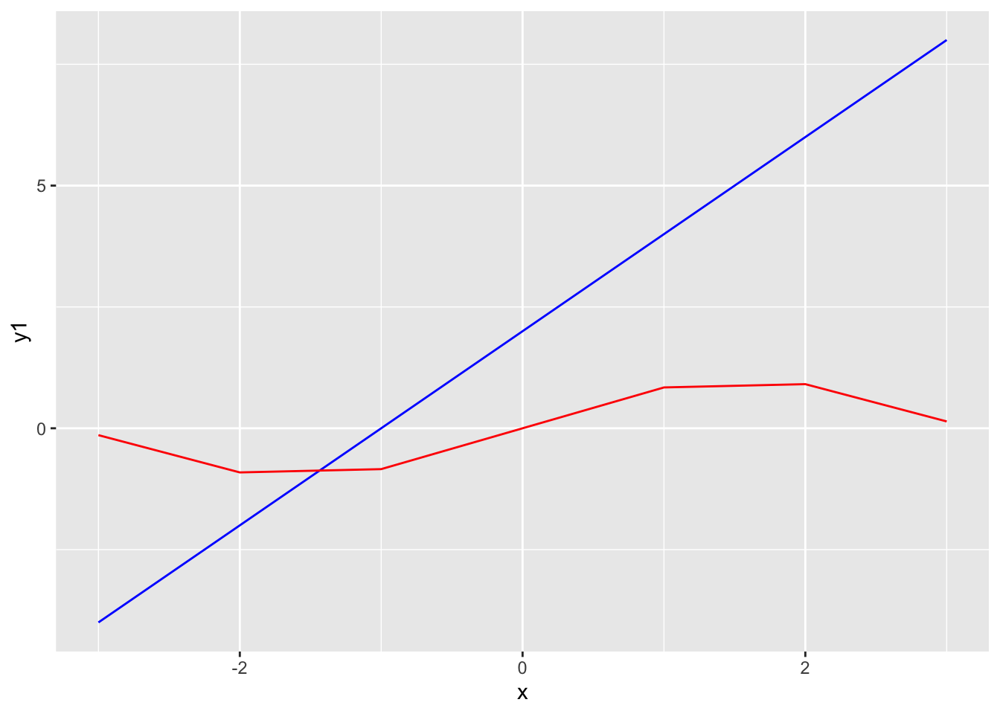

Asking good questions is a valuable skill to have - asking questions in an online setting is both easier and harder than asking questions in person: we can prepare to ask a question but we are also expected to prepare. The links posted here give some advice on how to ask good questions:
Follow these links and read through the advice given, then
Pick at least one question from stackoverflow or the R help and answer it.
Write a blog post answering the following questions:
Document which question you answered (link to your answer).
I chose a question from stackoverflow, and it asked how to plot two graphs in one plot.
The link to this page on stackoverflow is [https://stackoverflow.com/questions/2564258/plot-two-graphs-in-same-plot-in-r]
When I saw this question, the first solution that comes into my mind is to use ggplot2 package to draw the plot because we can add as many layers as we want on the original plot using all geom_ functions.
Here is an example:
library(ggplot2)# create an arbitrary integer array xx <-c(-3, -2, -1, 0, 1, 2, 3)# create two arbitrary functions y1 and y2y1 <-2*x +2y2 <-sin(x)# form a data frame used for ggplotmy.df <-data.frame(x)ggplot(data = my.df, mapping =aes(x, y1, y2)) +geom_line(aes(y=y1), colour ="blue") +geom_line(aes(y=y2), colour ="red")

Relate your experience of answering the question to your reading.
After I read the instruction “How do I ask a good question” on stackoverflow, I start entering some key words to search for relevent questions that others have ever asked. I typed “r” and “plot” because this is something that I have some knowledge of and I might be able to answer some questions about plotting in R. Then, I located the question that I answered above which is a relatively easy question. By reading the title of this question, I could easily get what they want to know, and based on my knowledge of R and ggplot2 package, it is easy for me to come up with an illustration that used ggplot() and geom_line() to plot multiple lines in the same plot. After I finished my solution, I came back to the stackoverflow page and read through others’ solutions. It turned out that there are many different ways of drawing two graphs in the same plot that I have not used before. Their ideas really helped me and provided me with more tools in my future R experience.